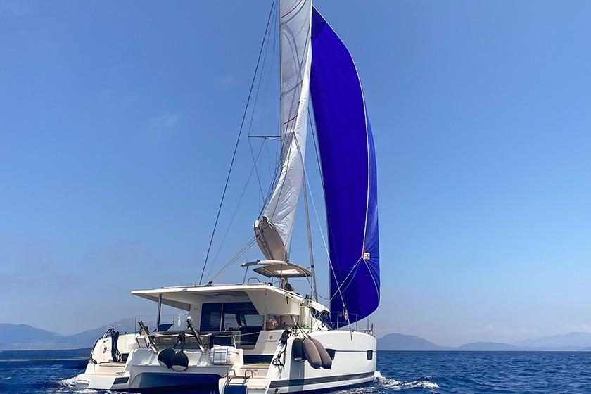
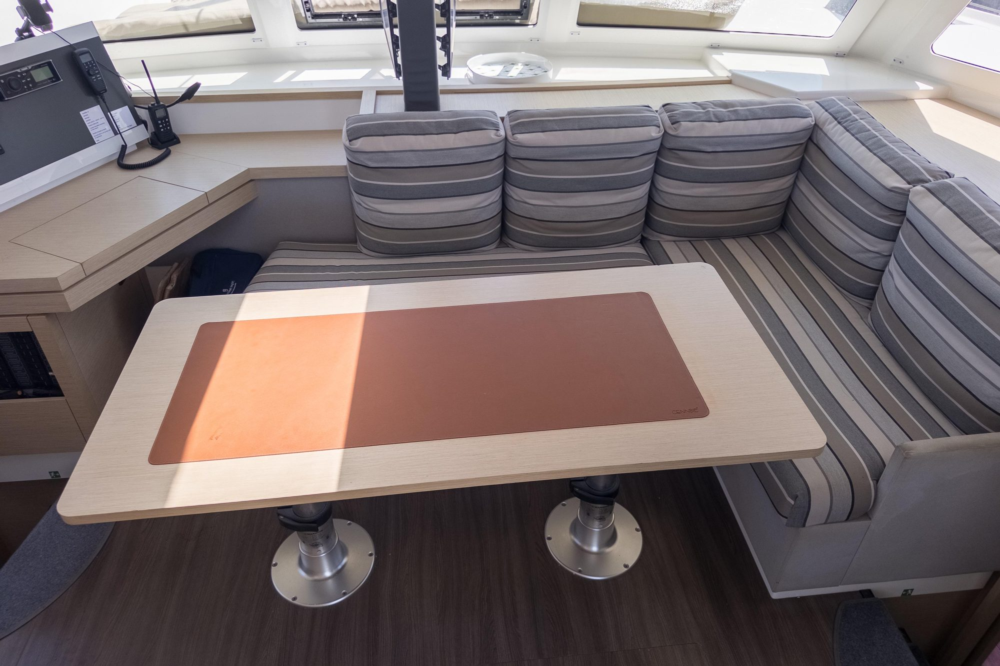
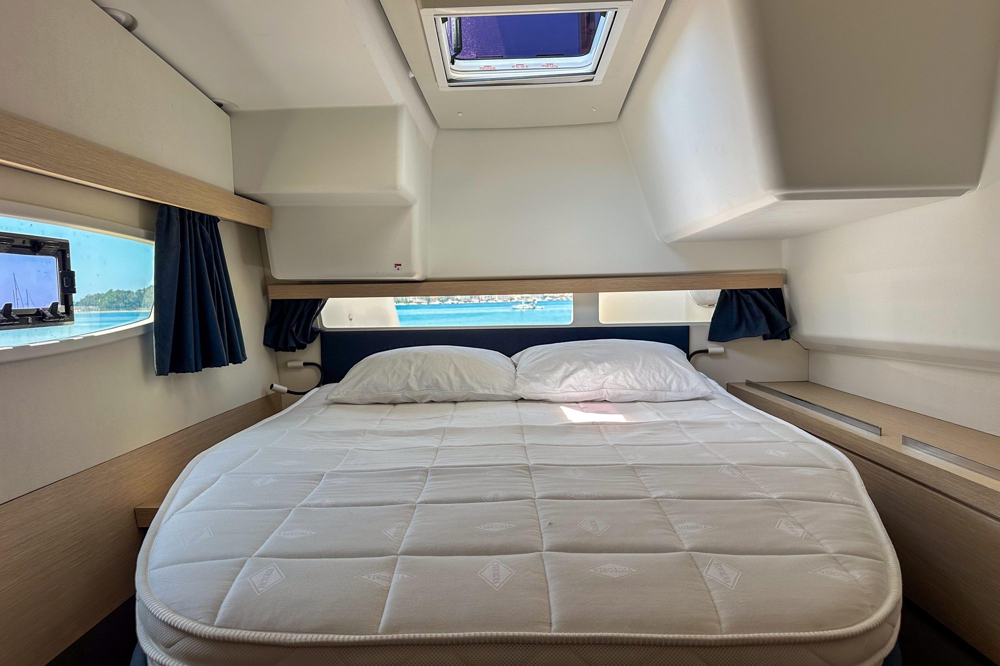
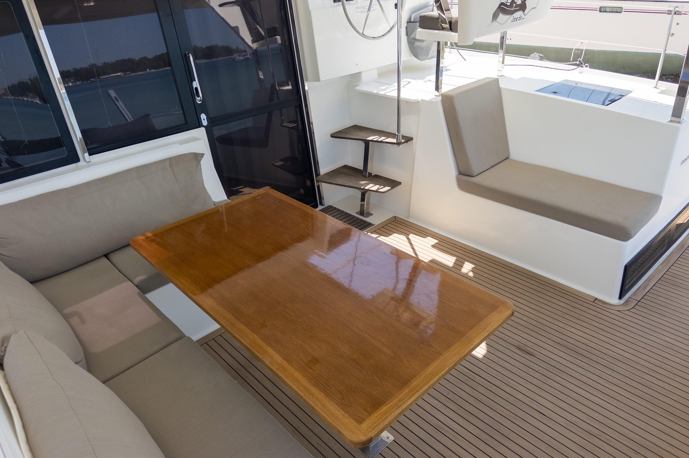

Парусный катамаран · 2019 г.
Люсия 40 — современный парусный катамаран 2019 года постройки. Просторный, комфортный и надёжный: 4 отдельные каюты с собственными санузлами, большой кокпит для отдыха, богатое оснащение для дальних переходов. Идеально подходит для семей, компаний и всех, кто ценит комфорт в море.


Камбуз

Каюта

Салон
| Тип | Парусный катамаран |
| Производитель / Год | Fountaine Pajot / 2019 |
| Длина / Ширина / Осадка | 11.73 м / 6.63 м / 1.20 м |
| Каюты / Санузлы / Мест | 4 / 4 / 8–10 |
| Двигатели | 2 × 45 л.с. Volvo Diesel |
| Запас топлива / воды | 300 л / 550 л |
| Паруса | 90 м² · грот + стаксель + генакер |
| Солнечные панели | 400 Вт + инвертор 2 кВт |
Картплотер Garmin 7600 с активным АИС, автопилот, радар, спутниковый трекер, электрический брашпиль, электрическая фаловая лебедка, генакер на закрутке. Starlink — высокоскоростной интернет в море.
Солнечные панели 400 Вт + инвертор 2 кВт — полная энергетическая независимость. Опреснитель воды — неограниченный запас пресной воды. Горячая вода, кондиционер, холодильник, газовая плита с духовкой, посуда, постельное бельё.
Спасательные жилеты на всех, спасательный плот, страховочные пояса, штормовые леера, пиротехника, аптечка первой помощи. Все документы и сертификаты в порядке.
Канарские острова (Гран-Канария, Тенерифе, Лансароте, Фуэртевентура), Средиземноморье, Черногория, Хорватия. Доступна для трансатлантических переходов.